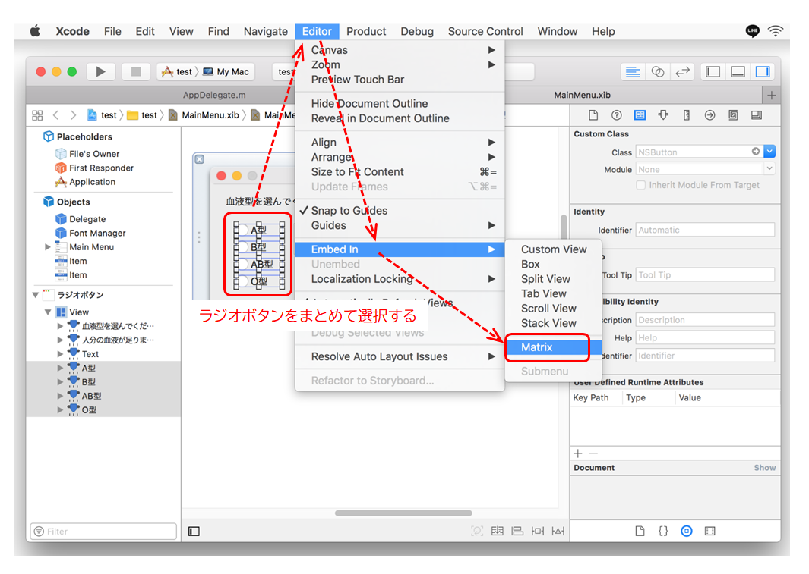

ラジオボタンを実装する
インタフェースビルダでコントロールを作成する。ラジオボタンを必要な数だけ定義する。ラジオボタンはNSButonクラスの一種である。
ラジオボタンのタイトルとtagを入力する。tagプロパティは、プログラムでクリックされたボタンを認識するために使うので、ユニークな整数値を設定すること。
NSMatrixオブジェクトの作成
4つのラジオボタンをまとめて選択状態にし次の操作をする。
Xcodeメニュー → Editor → Embed In → Matrix
（Matrixを解除するときは、メニュー項目の unembed を選ぶ）

NSButtonオブジェクトを配下に持つNSMatrixオブジェクト"matrix" がビューの下に作成される。このオブジェクトがラジオボタンの操作の単位となる。
ラジオボタンが選択されたときのアクションをプログラムで定義し、Matrixオブジェクトと接続する。
メソッドの実装
ラジオボタンが選択されたときに起動するアクションメソッド。選択されたボタンのtagの値を元に処理の振り分けを行う。このメソッドは同じボタンがクリックされても起動する。
初期処理などで、プログラムから特定のボタンを選択状態にするときの操作
xibオブジェクトのNSMatrixオブジェクトにはOutlet接続しておくこと。